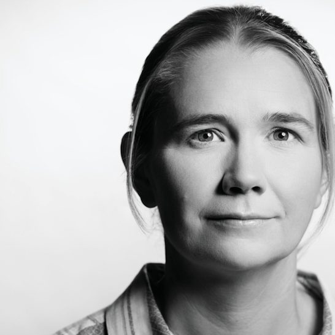

Conference host
Founder and CEO, WaVv and ConvergX
The ConvergX Global Congress is the flagship event within the ConvergX Xchange portfolio, bringing together leaders responsible for solving some of industry's most pressing challenges.
Every attendee is vetted and holds a decision-making role at VP level or higher. The industries represented in the room do not ordinarily sit together.
Organizations don't attend simply to exchange ideas. They come to solve problems, identify partners, evaluate technologies, and move opportunities forward.
ConvergX convenes leaders from energy, defence, aerospace, mining, agriculture, manufacturing, construction, technology, government, Indigenous economic development and finance.
All attendees are individually vetted, VP level or higher decision makers. Proof of ability to directly influence business direction and lead partnerships and investment is required to be considered to join ConvergX.
Find capability
Companies bring ConvergX a problem, or an RFP their own supply base cannot answer.
Get discovered
ConvergX goes out to companies it has already vetted, in whatever industry and wherever they are.
ConvergX
The next breakthrough in your industry may already exist in another.
ConvergX brings together leaders from energy, defence, aerospace, mining, agriculture, manufacturing, construction, technology, government, Indigenous economic development, and finance to identify proven solutions that adapt across sectors.
Industries that rarely share a room also rarely share suppliers, which is why the same problem is often solved twice, years apart, without either side hearing about the other.
Finding the company that can answer a requirement usually means working through your own supply base, then a trade show, then a search that assumes you already know the term to type. For three days the people who could answer that requirement are in one building.
Curated meetings, facilitated introductions, and industry showcases create conversations that become partnerships, procurements, commercialization pathways, and investment opportunities.
This is where conversations turn into contracts.
ConvergX is built for leaders with the authority to act.
Attendees include executives, owners, operators, procurement leaders, government officials, military leadership, investors, innovators, and technology providers who influence strategy, purchasing, partnerships, and deployment.
Delegates register for some combination of:
The most valuable conversations happen when the right people have been brought together deliberately, which is what ConvergX composes the room to do.
Cross-sector convening, faster decisions and real outcomes.
Conference host
Founder and CEO, WaVv and ConvergX
Opening keynote
Building Resilience to Perform in the Storm
President, Canadian Global Affairs Institute
Professor of Geomatics Engineering and AVP Research, University of Calgary
Innovation and Market Development, Aerospace Energy Systems and Sustainability, Boeing Canada
Executive Advisor, Innovation, Canadian Natural Resources Limited
Professor, Mayo Clinic

Associate Professor and Canada Research Chair, University of Calgary
CEO, Kalashnikov USA
Professor, Political Science, University of Calgary
| Time | Session |
|---|---|
| 08:00 to 12:00 | Invite Only Executive Roundtable |
| 14:00 to 16:00 | Invite Only Executive Roundtable |
| 16:00 to 20:00 | Welcome Reception, Romero Distillery |
| Time | Session |
|---|---|
| 07:30 to 08:00 | Breakfast |
| 08:00 to 08:15 | Welcome and Opening RemarksKimberley Van Vliet. |
| 08:15 to 08:45 | Welcome from the Province, and Opening KeynoteTracy LaTourette, "Building Resilience to Perform in the Storm". |
| 08:45 to 10:00 | Session #1. ConvergX-UFour State of the Union slots. Defence, Dr. David Perry, President, Canadian Global Affairs Institute. Energy, Gurpreet Lail, President, Enserva. Mining and Agriculture, speakers not named. |
| 10:00 to 10:15 | Break |
| 10:15 to 11:30 | Panel #2. The Convergence Reckoning: What Worked, What's Buying Now |
| 11:30 to 12:00 | Pre-Lunch Reception & Networking |
| 12:00 to 13:30 | Lunch and Keynote SpeakerSpeaker not named. |
| 13:30 to 14:45 | Panel #3. Industrial Sovereignty and the Commercialization Engine: Defence and Commercial ScaleCovers the sectors where defence and commercial buyers draw on the same factories, supply chains and workforces. |
| 14:45 to 15:15 | Break |
| 15:15 to 16:30 | Panel #4. Extreme Environments as Commercialization Accelerators |
| 16:30 to 16:45 | Announcements and housekeepingFor Day 2 and the Evening Reception. |
| 16:45 to 20:00 | Evening Networking Reception, Entertainment and Spirits Tasting |
| Time | Session |
|---|---|
| 07:30 to 08:00 | Breakfast |
| 08:00 to 08:15 | Welcome and Opening RemarksKimberley Van Vliet. |
| 08:15 to 08:45 | KeynoteSpeaker to be announced. |
| 08:45 to 10:00 | Panel #5. Integrated Resource Security and Commercial ResilienceCovers energy, food and public health systems, and the satellite, IoT, AI, biosensing and edge computing capabilities underneath them. |
| 10:00 to 10:15 | Break |
| 10:15 to 11:30 | Panel #6. AI, Autonomy, and Human Performance at the Edge |
| 11:30 to 12:00 | Pre-Lunch Reception & Networking |
| 12:00 to 13:30 | Lunch and Keynote SpeakerSpeaker not named. |
| 13:30 to 14:45 | Panel #7. Capital, Competition, and the Geopolitics of Convergence |
| 14:45 to 15:15 | Break |
| 15:15 to 16:30 | Panel #8. Convergence as Commercial Opportunity |
| 16:30 to 17:45 | Closing Keynote & Wrap Up Reception |
ConvergX publishes this schedule as subject to change. The agenda a delegate carries during the three days lives in the app, which is updated as the programme changes.
Four Calgary hotels, published by ConvergX for September.
One corporate rate code covers two of them. Rooms are booked direct with the hotel, and they are not part of a registration or bought through ConvergX.
610 10th Avenue SW, Calgary, AB T2R 1M3
Reservations 587-855-2288
No rate code is published for this hotel.
Opens the hotel's own booking site.
320 4th Avenue SW, Calgary, AB T2P 2S6
Reservations 403-266-1611
Rate code S7156
Booking with the code
Opens the hotel's own booking site.
525 5th Avenue SW, Calgary, AB T2P 1P7
Reservations 403-300-6650
Rate code S7156
Booking with the code
133 9th Avenue SW, Calgary, AB T2P 2M3
Reservations 403-262-1234
No rate code is published for this hotel.
Opens the hotel's own booking site.
Three passes are published, in US dollars: Standard 2,000, Government 1,000 and Military 400. None of the three includes admin fees. Tax is added to the Standard pass and is not applicable to the Government and Military passes.
Executives, owners, operators, procurement leaders, government officials, military leadership, investors, innovators and technology providers, all of them people who influence strategy, purchasing, partnerships and deployment.
ConvergX vets every attendee, and the standard begins at VP level. It asks for proof of ability to directly influence business direction and to lead partnerships and investment.
Admission is a decision ConvergX makes on each request individually, and it is not a form to be passed. A registration does not stand in for that decision, and no sponsorship tier reaches it.
No. A registration buys a seat in the building, and it does not carry vetted standing, an introduction, or a place on the opportunity board. ConvergX decides each of those separately, one request at a time.
ConvergX publishes no refund, transfer or cancellation policy anywhere on its own site, so nothing on that subject is stated here.
Yes. Nine tiers are published and are bought on the ConvergX shop, the same place registrations are.
Sponsorship buys visibility in the room, and it does not buy a match. Who is introduced to whom is decided by a person at ConvergX against the requirement on the table, and no tier reaches that decision or stands in for vetting.
The nine published tiers run from 7,500 to 50,000 US dollars.
Inclusions are published per tier and differ at every level. Delegate passes are the one item common to all nine, from six at the top tier to one at the entry tier. The full list sits beside each tier on the sponsor page.
ConvergX publishes a hotel list for September on its own site, along with a corporate rate code that covers part of it.
ConvergX publishes no venue alongside that list, and no venue is named on this page either.
The Tuesday welcome reception opens at 16:00 and the Thursday programme closes at 17:45. Booking to land before the first and leave after the second covers all three days.
Yes. The agenda, the sessions and the opportunity board sit on it.
Push notifications reach Android. Availability for September is not confirmed, and nothing here promises a download.
The three days of the programme are carried on the phone delegates already have
The agenda, the sessions and the opportunity board sit on the phone of everyone in the room, so a schedule that changes on Tuesday reaches delegates rather than leaving them with a printed copy that is out of date. A requirement raised in a hallway can go on the board at the time it comes up.
Push notifications reach Android. Availability for September is not confirmed, and nothing here promises a download.